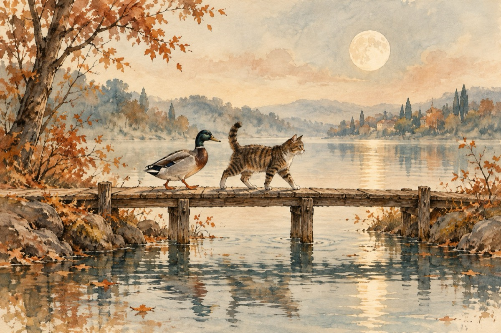

Parteneri de drum
Un rățoi și cu-n motan
S-au întâlnit pe tăpșan
Era de-acum toamnă plină
Verdele dădea-n rugină
Au pornit la o plimbare
Interese similare
Rățoiul căuta rața
Iar motanul pisicuța
Negăsindu-și partenera
Fiindcă asta și-o dorea
Au pornit pe bunul plac
Trecând puntea peste lac
Dincolo îi aștepta
Pe motan, ea pisicuța
Pe rățoi, frumușica sa rățușca
Și-nspre casă merg fuguța!
Rățoiul e cu rățușca
Motanul cu pisicuța
Luminați de luna plină
Și-au spus voioși ,,noapte bună!”
Vasile Groza